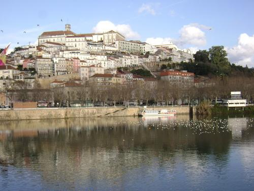
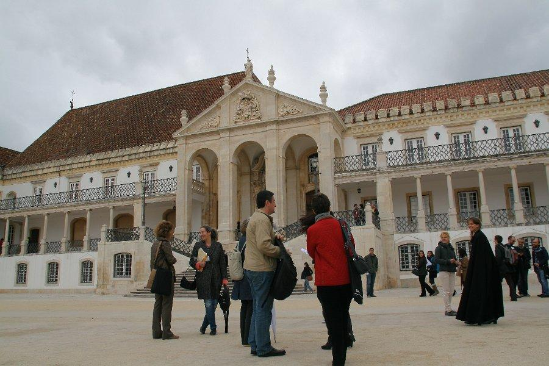

Table of Contents
Editorial
Welcome to the 17th EACL newsletter, the special yearly issue devoted to the conferences and meetings of the regional academic associations in Europe dealing with Computational Linguistics.
In this issue, Marty Reynaert reports on the conference on Computational Linguistics in The Netherlands (CLIN 2012), Herve Blanchon reports on the fourth joint JEP-TALN-RECITAL conference, Jeremy Jancsary reports on the Conference on Natural Language Processing (KONVENS 2012), Fernando Perdigão reports on the 10th International Conference on the Computational Processing of Portuguese (PROPOR 2012), Rafael Berlanga Llavori reports on the 28th edition of the Annual Conference of the Spanish Society for Natural Language Processing (SEPLN 2012), and Anja Belz reports on the Workshop on Vision and Language (V&L 2012).
Vivi Nastase and Marie-Francine Moens, editors
22nd conference on Computational Linguistics in The Netherlands (CLIN)
January 20, 2012
Tilburg University, The Netherlands
On January 20th. 2012 the 22nd edition of the largest language technology conference of The Netherlands and the Dutch language region of Belgium, Flanders, took place at Tilburg University, The Netherlands. 105 researchers from both countries as well as from France and South-Africa attended talks about topics as diverse as spelling correction to semantic annotation, syntactical parsing to the study of new media. Invited speaker was Marco Baroni from the CLIC group of CIMeC, the Center for Mind/Brain Sciences of the University of Trento, who is an expert in distributional semantics.
The conferences's 60 accepted papers (from a total of 65 submissions) were organized into 3 parallel sessions covering 5 topics each:
The walking lunch provided all the opportunity to sample the poster and demonstration session.
The organizers this year experimented with sponsors' talks. The topics of these plenary presentations were the automatic assignment of keywords to texts, federated search in distributed sources of linguistic information, and an overview of the new reference corpus for contemporary written Dutch, SoNaR. This 500MW corpus was developed during the Stevin program of the Dutch Language Union, together with CLARIN-NL, a major sponsor of the event. Further sponsors were the organisations BNVKI and SIKS and language technology companies TextKernel and Gridline.
The CLIN-2012 website provides an overview of the day's events.
Martin Reynaert
TiCC - Tilburg University
On behalf of CLIN-2012 co-organizers Roser Morante, Matje van de Camp, Menno van Zaanen and Kalliopi A. Zervanou
19th conference on Natural Language Processing (TALN)
25th conference on Journées d’Études sur la Parole (JEP)
17th conference of PhD Students in Natural Language Processing (RECITAL)
and their satellite workshops:
DEFT 2012: 7th French speaking Text Mining Evaluation Campaign
DEGELS 2012: 2nd workshop of the Computational tools for the French "Sign Language"
ILADI 2012 : 1st workshop on natural language interactions for elderly people in smart homes
ATALAf : 1st workshop on natural language (text & speech) processing for African languages
June 4-8, 2012
Grenoble, France
For the fourth time, after Nancy in 2002, Fez in 2004, and Avignon in 2008, the AFCP (Association Francophone pour la Communication Parlée) and the ATALA (Association pour le Traitement Automatique des Langues ) have jointly organized their main conference in order to bring together the two communities of speech and text processing in order to foster interactions and promote cross fertilization.
TALN (Traitement Automatique des Langues Naturelles) is the major French speaking scientific event in Natural Language Processing (NLP) and Computational Linguistics (CL). It is organized on turns by the NLP academic teams from different universities and different French speaking countries, after agreement by the steering committee of the French Society for Computational Linguistics, ATALA. It aims at presenting innovating researches and approaches in Computational Linguistics and Natural Language Processing. It offers a unique opportunity, for all actors of R & D in NLP of the French speaking area (France, Belgium, Switzerland, Luxemburg, Canada, and also Northern Africa and the Middle and Far East), to meet together, and promote their works. Students, academics and companies are invited to participate in the conference.
The general atmosphere during the conference and the feedback of the participants were both excellence. Three invited talks were provided : Jacqueline Léon, Laboratoire d'histoire des théories linguistiques (CNRS & Université Paris Diderot), on "Tensions between theory and practice in NLP applications", Yoshinori Sagisaka, Global Information and Telecommunication Institute (Waseda University, Tokyo), on "Trans-disciplinary spoken language processing studies for scientific understanding of second language learner’s characteristics", and Ian Maddieson, University of California (Berkeley) and University of New Mexico (Albuquerque), on "The Origin and Distribution of Complexity of Phonological Structure".
We received 62 long paper proposals for TALN, 24 of which were selected through a thorough review process (a selection rate of 39%). 61 short papers were submitted of which 29 were selected through a review process similar to that of long papers (a selection rate of 48%). As in the previous edition of TALN, short papers were presented in oral booster sessions (2 minutes per paper) followed by poster sessions. 10 demonstrations were also presented during a dedicated session.
For the JEP, 145 paper proposals were received. At the end of the review process, 108 were selected (74%). 28 paper presented in oral sessions and 80 during poster sessions.
Paper submission to RECITAL has been fostered thanks to several innovations. First, the call for papers has been extended to allow the submission of preliminary work, PhD projects, work developed during the first months of research (state of the art, early results). Then, the review process has been modified to provide educational remarks (encouragement, promising ideas) and to allow direct interaction between the authors and the reviewers (non-anonymous reviews). These changes were crowned with success since we received 42 proposals among which 11 have been selected for oral presentation (27%) and 17 for poster presentation (40%).
As far as the conference proceedings are concerned, we have provided new styles optimized for on screen reading. Although the habits of authors have been changed on this occasion, we hope that readers will have a great reading experience. A better dissemination of the research works presented has also been of uppermost importance, that is why we chose to have them referenced in the ACL Anthology (aclweb.org/anthology/F/F12) for better visibility.
The ATALA TALN best paper award was won by the paper of Matthieu Constant, Anthony Sigogne and Patrick Watrin Modèles génératif et discriminant en analyse syntaxique : expériences sur le corpus arboré de Paris 7. The ATALA RECITAL best paper award was won by the paper of Pierre Magistry Segmentation non supervisée : le cas du mandarin.
Conference on Natural Language Processing
("Konferenz
zur Verarbeitung Natürlicher Sprache", KONVENS)
September
19-21, 2012
University of Vienna, Vienna, Austria
The Conference on Natural Language Processing ("Konferenz zur Verarbeitung Natürlicher Sprache", KONVENS) aims at offering a broad perspective on current research and developments within the interdisciplinary field of natural language processing. It allows researchers from all disciplines relevant to this field of research to present their work.
KONVENS is held in a two year rotation, organized by the scientific societies DGfS-CL (German Society for Linguistics, Section Computational Linguistics), GSCL (Society for Language Technology and Computational Linguistics) and ÖGAI (Austrian Society for Artificial Intelligence).
This year's KONVENS, already the 11th instalment, was organized by ÖGAI and hosted at the Juridicum building of the University of Vienna.
Contributions on research, development, applications and evaluation, covering all areas of natural language processing, ranging from basic questions to practical implementations of natural language resources, components and systems were welcome.
In keeping with the tradition, we furthermore chose a central theme for this year's KONVENS,
"Empirical methods in natural language processing,"
and especially encouraged the submission of contributions proposing new methods for learning from substantial amounts of natural language (including speech) data, be they annotated or un-annotated, as well as contributions relating to the evaluation of such methods.
We are happy to report that we received a substantial number of submissions relevant to the central theme, resulting in a strong and focussed program. Overall, KONVENS received 65 submissions, 32 out of which were selected for either oral or poster presentation at the conference. The reviewing process was very thorough, with papers typically receiving 3 reviews by the program committee (in borderline cases up to 7), as well as one additional meta-review by an area chair. We would like to express our sincere gratitude and appreciation to everyone involved in the reviewing process. The proceedings are published by ÖGAI and are made available online in various formats.
Another decided goal for this year's KONVENS was to attract an increasing number of international submissions. With presenters and participants flying in from Africa, America, Asia, Near East, and all across Europe, this goal was clearly met. Overall, KONVENS 2012 had a total of 94 participants. Part of this success is certainly owed to the remarkably committed organizers of the four workshops KONVENS hosted this year, and we would like to extend our thanks to them:
PATHOS 2012 First Workshop
on Practice and Theory of Opinion Mining and Sentiment Analysis
(Stefan Gindl, Robert Remus, and Michael Wiegand)
LThist 2012 First
International Workshop on Language Technology for Historical Text(s)
(Brigitte Krenn, Karlheinz Mörth, and Thierry Declerck)
LexSem 2012 Workshop on
Recent Developments and Applications of Lexical-Semantic Resources
(Stefan Engelberg and Claudia Kunze)
SLR 2012 Workshop on Standards for
Language Resources
(Andreas Witt and Ulrich Heid)
We are also very proud to have had Hermann Ney and Marco Baroni as our invited speakers. Both talks provided highly interesting perspectives on the central theme of the conference, albeit from different points of view, and initiated vivid discussions.
Finally, the conference dinner at a typical Austrian wine tavern was very well received, underlining the stimulating, yet friendly and intimate atomsphere of KONVENS.
We are looking forward to KONVENS 2014, to be organized by GSCL.
Jeremy Jancsary, Harald Trost, Ernst Buchberger
Conference
Organizers
10th International Conference on the Computational
Processing of Portuguese
April 17-20, 2012
Coimbra, Portugal
The International Conference on Computational Processing of Portuguese (PROPOR) is the main event in the area of natural language processing that is focused on Portuguese and the theoretical and technological issues related to this language. The event has been hosted in Brazil and in Portugal every other year. This event has been a highly productive forum for the progress of this area and is definitely the main conference on the automated processing of the Portuguese language.
The tenth edition of this event was held at the University of Coimbra, Coimbra, Portugal (http://www.propor2012.org) and gathered about 90 participants, among researchers and students from academia and industry. The event was organized by Fernando Perdigão (General chair), António Teixeira (Speech Chair), Aline Villavicencio (Language chair), Helena Caseli (Editorial chair), Alberto Abad (Demos) and Jorge Baptista (Best dissertation contest).

Coimbra
viewed from the river Mondego.
In addition to the technical program Propor 2012 hosted a special and highly participated Demonstration Session and a satellite event named "Págico", consisting on an evaluation contest for nontrivial computational or manual Question Answering in Portuguese using Wikipedia as target and requiring inference capabilities for finding the answer. It also featured two invited talks, one by Prof. Robert Berwick, from MIT (USA), and other by Prof. Paul Boersma, from University of Amsterdam (NL), as well as two tutorials: "Deep Linguistic Processing", by Dr. António Branco and Mr. Francisco Costa, and "Analysis and visual feedback of the singing voice", by Dr. Aníbal Ferreira. There was also a panel about the current trends in speech and language technology, with Dr. António Branco, Dr. Isabel Trancoso and Dr. Plínio Barbosa.

The
University of Coimbra is one of the oldest in Europe and was founded
in Lisbon by King Dinis in 1290.
The main program featured papers by authors in worldwide institutions from countries like Brazil, China, Germany, Portugal and Spain, and were published in Springer's Lecture Notes in Artificial Intelligence series (LNAI 7243). This volume gathers a selection of the 47 best papers accepted to be presented at the meeting, of which 24 are full papers, corresponding to an acceptance rate of 27%. These papers cover the areas related to automatic acquisition of information, linguistic description and processing, language resources, language applications and speech production, speech processing and applications.
The next PROPOR will be held in 2014, in São Carlos/SP-Brazil, and will be organized by Thiago Pardo and Graça Nunes (General chairs, both from ICMC-USP - University of São Paulo).
Fernando Perdigão
University of Coimbra, Portugal
PROPOR 2012 General Chair
António Teixeira
University of Aveiro, Portugal
PROPOR 2012
Programme Chair
Aline Villavicencio
Federal University of Rio Grande do Sul, Brazil
PROPOR 2012 Programme Chair
The 28th edition of the Annual Conference of the Spanish
Society for Natural Language Processing
September 5-7, 2012
Universitat Jaume I, Spain
The 28th edition of the Annual Conference of the Spanish Society for Natural Language Processing (SEPLN) took place in the Universitat Jaume I, Castelló de la Plana (Spain), on September 5, 6 and 7, 2012. The President of the Scientific and Organizing Committees was Rafael Berlanga-Llavori.
The main goal of this annual conference is to be a forum for the presentation of the latest research and development in Natural Language Processing by the scientific community and the industry. It also aims to showcase actual applications and to introduce new R&D projects in the field. As in previous editions, the conference intends to identify future trends for basic research and applications as foreseen by professionals, in order to contrast them with actual market needs. Finally, the conference expects to be an enabling framework to introduce new people with an interest in this area of knowledge.
SEPLN 2012 received 53 submissions, out of which 38 were submitted as long papers and 9 as short papers (4 demonstrations and 5 ongoing R&D projects). The conference accepted 27 papers (acceptance rate of 51%), which were presented as either oral presentations (19 papers) or posters (8 papers). The papers were selected by a Program Committee of 47 reviewers from Europe, Mexico and Cuba. The reviewing process was a two-round review and the submitted papers were subjected to a blind review by at least three members of the Scientific Committee. A selection of the presented papers was published in the issue 49 of the journal Procesamiento del Lenguaje Natural (ISSN: 1135-5948, ISSN: 1989-7553), which is publicly available at the SEPLN site.
There were two keynotes at the conference:
Ido Dagan (Bar-Ilan University, Israel) presented the keynote Natural Language Inference in Natural Language Terms
David Losada Carril (Universidad de Santiago de Compostela, Spain) presented the keynote The Potential of Linguistic Technology to Drive Polarity Estimation in Web Social Media
Additionally, Parth Gupta (Universitat Politècnica de València, Spain) gave a tutorial about Learning-to-rank during the conference.
The main conference was followed by three co-located workshops:
2nd Workshop on Exploiting Large Knowledge Resources (E-LKR)
Automatic Text Summarization for the Future (ATSF)
Sentiment Analysis at SEPLN (TASS)
SEPLN 2012 had 80 participants.
The next edition of the SEPLN conference will take place in the Universidad Complutense de Madrid (Spain), co-located with the Spanish multi-Conference on Informatics CEDI 2013.
Rafael Berlanga Llavori
Universitat Jaume I, Spain
President of the Scientific and Organizing Committees for
SEPLN 2012
The 2nd V&L Net Workshop on Vision and Language
December 13-14, 2012
University of Sheffield, UK
The 2nd V&L Net Workshop on Vision and Language (VL’12) was held at the University of Sheffield on 13th and 14th December 2012, and was attended by 50 participants. As for VL’11, the purpose of the workshop was to bring the computer vision and language processing communities together and to facilitate community building and networking between them. VL’12 was organised by V&L Net (the EPSRC Network on Vision and Language) and sponsored by the BMVA (British Machine Vision Association).
The programme of the first day consisted of two parallel sessions of tutorials that provided each of the two communities with the opportunity to learn about the main methodologies and recent developments in the other community. Three computer vision tutorials were aimed at participants working predominantly with language: Datasets for Visual Object Recognition (presented by Prof Chris Williams, University of Edinburgh), Local Feature Extraction (presented by Dr Krystian Mikolajczyk, University of Surrey), and Machine Learning Methods for CV (presented by Dr Toby Breckon, Cranfield University). Three language processing tutorials, primarily aimed at the computer vision researchers attending the workshop, were run at the same time: Parsing and Analysis (presented by Prof Ted Briscoe, University of Cambridge), Information Retrieval/Extraction (presented by Prof Rob Gaizauskas, University of Sheffield), and Machine Translation (presented by Dr Lucia Specia, University of Sheffield).
The second day was dedicated to cross-disciplinary research involving both vision and language. The first invited lecture was by Dr Katerina Pastra (Cognitive Systems Research Institute, Athens) who presented some of her recent work in Are all verbs equal? Language in Action within the Embodied Cognition Perspective. The second invited lecture was by Dr Peter Mika (Yahoo Inc., Barcelona) who represented the industrial perspective, discussing the challenges and the potential of Making the Web Searchable with Data and Images. In addition, six technical presentations and eight poster presentations discussed current and potential research in the intersection between the two research fields.
The workshop was wrapped up by an informal discussion session on the future of cross-disciplinary research between vision and language. Overall, the event facilitated technical dialogue and bridge building between the research areas of computer vision and language processing, and provided ample networking opportunities to V&L Net members and other participants.
We are currently in the process of putting all abstracts, slides, posters and mini-posters from the workshop online.
Forthcoming V&L Net organised events in 2013 include VL’13, to be held at Herstmonceux Castle in East Sussex in September 2013, and the V&L Net Workshop on Language for Vision to be held at the 2013 IEEE Conference on Computer Vision and Pattern Recognition (CVPR 2013) in Portland, Oregon, in June 2013.
Organisers:
Anja Belz, University of Brighton
Kalina Bontcheva, University of Sheffield
Darren Cosker, University of Bath
Dimitrios Makris, Kingston University